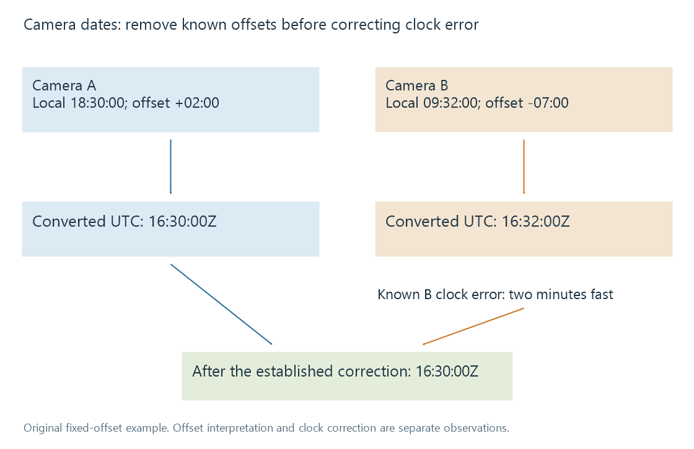

Photo capture dates and camera clocks
A photo capture date describes when an image was made, with clock, offset, precision and provenance needed to distinguish it from digitisation, editing or file-copy times.
A photograph can have several legitimate dates: capture, digitisation, editing and copying. They describe different events. A newly copied file can depict a much older moment.
Choosing a date for album ordering therefore requires knowing what the field means, not merely selecting the newest or most precise-looking timestamp.
A date needs an event scope
| Information | Intended event |
|---|---|
| Capture date/time | Making the original image |
| Digitisation date/time | Creating a digital representation, such as scanning a print |
| Metadata or resource modification time | A later editing or writing operation |
| Filesystem creation time | Creation of this stored filesystem object |
| Catalogue import date | Adding the resource to that catalogue |
Exif, XMP and IPTC can represent relevant descriptive dates, with different field structures and semantics. A scanner or editor's output date does not reconstruct the original exposure simply because it appears inside an image file.
For an old print scanned in 2026, taken around 1988 and digitised in 2026 can both be correct descriptions. They should remain separate.
Local time and offset
An Exif-style original-time example is:
DateTimeOriginal: 2026:07:14 18:30:00
OffsetTimeOriginal: +02:00
SubSecTimeOriginal: 250
The local clock value describes 18:30. Its offset makes the corresponding UTC instant 16:30. The subsecond string supplies .250 seconds in this example, so the combined local value is 18:30:00.250.
Subseconds express additional precision. They do not prove that the camera clock was calibrated to millisecond accuracy.
A DateTimeOriginal value without offset information supplies a local clock reading but not, by itself, a unique UTC instant. The computer's current time zone is not evidence that the camera was in that zone when the image was made.
Two cameras at the same event
Take these original fictional observations:
| Camera | Recorded local clock | Known fixed offset | Converted UTC clock |
|---|---|---|---|
| A | 18:30:00 | +02:00 | 16:30:00Z |
| B | 09:32:00 | −07:00 | 16:32:00Z |
The nine-hour local-clock difference mostly reflects offsets. After conversion, a two-minute difference remains.
If independent event evidence establishes that B's clock was two minutes fast, applying that known correction aligns the observed moment at 16:30Z. Merely changing its offset would confuse clock error with time-zone interpretation.

The diagram assumes the offsets and clock error are known. It is not an automatic date-repair procedure or a claim about real photographs.
For a combined album, preserving the recorded clock, established offset and applied correction makes the ordering explainable. Rewriting all dates without that provenance loses the evidence needed to revisit the decision.
Calendar days can differ for the same instant
A local capture at 23:45 on 14 July with a fixed UTC−04:00 offset corresponds to 03:45Z on 15 July. The instant is the same, but its local and UTC calendar dates differ.
A trip album grouped by the photographer's local day can reasonably retain 14 July. A global chronological index can use the UTC instant. Neither grouping should silently claim that its calendar-day interpretation is the only date carried by the photograph.
An offset also does not identify a time-zone region or all of its historical clock rules. The same offset can be used in several places, and one place can use different offsets at different times.
GPS time supplies another observation
GPS date/time fields can describe a UTC positioning fix. That timestamp has its own event scope. It should not automatically replace the exposure time unless the relationship between fix and capture is established.
A nearby GPS observation can help with interpretation, but coordinates alone do not prove the camera's clock setting or exact exposure instant. Photo geolocation explains the corresponding location scopes.
Video resources add another date convention. Container creation fields can have UTC semantics while some devices write values differently. Reading software's interpretation needs to preserve that distinction; applying the current machine zone blindly can create another error.
Approximate knowledge should retain its precision
A family record may establish only a year or month. Inventing 1 January at midnight fills a missing value while making a false claim of precision.
A qualified description, an appropriate partial-date representation or an explicit uncertainty record can retain the actual knowledge. The supported metadata fields and reader determine how that information is stored and displayed.
Copying or exporting an image can preserve, transform or omit its date metadata depending on the workflow. In a catalogue, the interpreted capture date should remain associated with its evidence rather than being replaced by whichever filesystem timestamp happened to change last.
See Also
- Exif photo metadata
- XMP metadata
- Photo albums and picture membership
- Photo geolocation and coordinate metadata
- Release dates